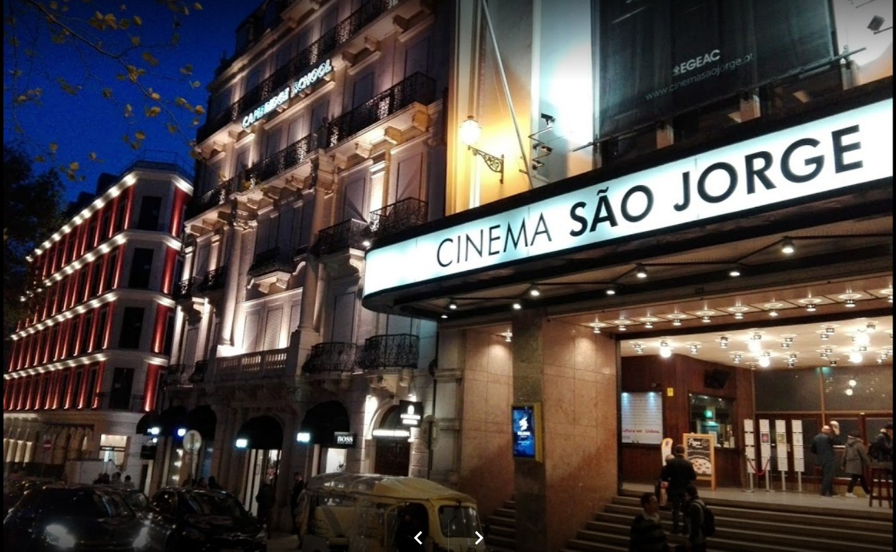

São Jorge
Fundado em 1969 dando seguimento às disposições testamentárias de Calouste Sarkis Gulbenkian, industrial de origem arménia, fixado em Portugal em meados do século XX, e que ao longo da sua vida reuniu uma vasta colecção de arte.
Com dois circuitos independentes. O primeiro é dedicado à Arte Oriental e Clássica, com peças de arte egípcia, greco-romana, arte islâmica, arte da China e arte do Japão. O outro circuito é dedicado à Arte Europeia, com peças cronologicamente situadas num período que se inicia no século XI e termina no século XX.